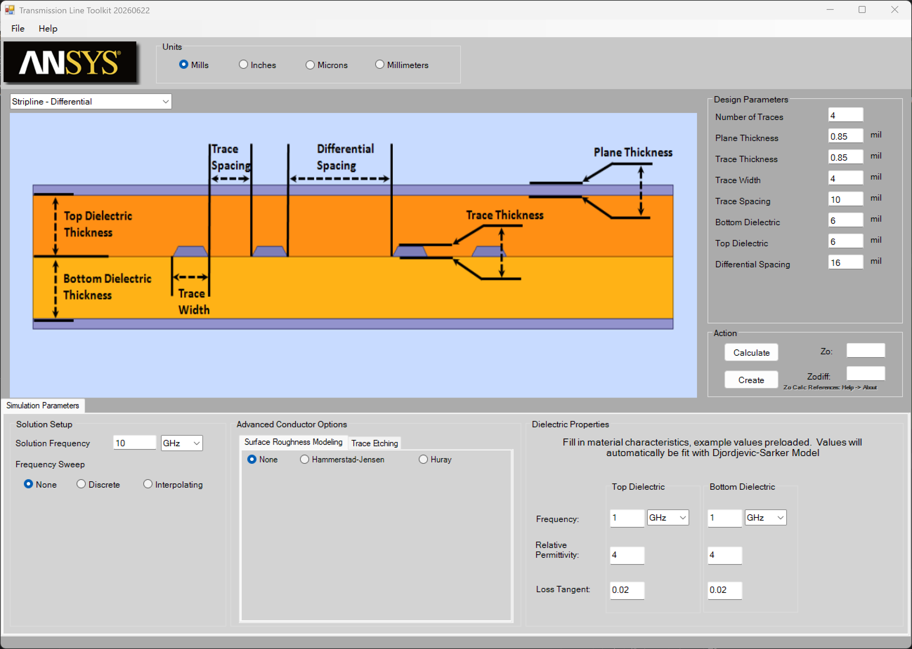

Overview
TransmissionLineToolkit is a parametric PCB transmission line modeling and simulation tool based on Ansys Q2D Extractor. It provides a GUI supporting multiple trace types for building Q2D models, estimating characteristic impedance, and running full-wave simulations. The tool runs via IronPython inside AEDT and creates Q2D designs directly.

Requirements
- Runtime: Ansys Electronics Desktop (AEDT) 2022 R1 or later
- Script engine: IronPython (AEDT built-in)
- Design type: Q2D Extractor
Toolbox installation directory/
├── UserLib/
│ └── Toolkits/
│ └── q2d_tlineToolkit/
│ ├── TransmissionLineToolkit.py (main entry script)
│ ├── Q2D走线建模与优化设计.pdf (user guide)
│ └── TLine/
│ ├── MainForm.py (GUI main form)
│ ├── anstDebug.py (logging module)
│ └── Images/ (UI image assets)
└── ...
Add the following to your menu XML:
<SubMenu Type="MenuItem"
Name="TransmissionLine Toolkit"
ExecuteType="IronPython"
Path="$UserLib/Toolkits/q2d_tlineToolkit/TransmissionLineToolkit.py"
EntryFunc="main"
Arguments="" />
Supported Trace Types
| Trace Type |
Description |
Typical Use |
| Microstrip - Single Ended |
Single-ended microstrip |
Surface layer single-ended signals |
| Microstrip - Differential |
Differential microstrip |
Surface layer diff pairs (USB, HDMI) |
| Stripline - Single Ended |
Single-ended stripline |
Inner layer single-ended signals |
| Stripline - Differential |
Differential stripline |
Inner layer diff pairs (PCIe, DDR) |
| Stripline - Broadside Coupled |
Broadside coupled stripline |
High-density differential routing |
| Grounded Coplanar Waveguide |
GCPW |
High-frequency RF/microwave signals |
GUI Layout
┌────────────────────────────────────────┐
│ [ANSYS Logo] [Model Export] [GUI] │ ← Top panel
├────────────────────────────────────────┤
│ [Design type selection dropdown] │
├─────────────────┬──────────────────────┤
│ │ Design Parameters │
│ Cross-section │ ├─ Trace dimensions │
│ diagram │ ├─ Units │
│ (live update) │ └─ Material props │
├─────────────────┴──────────────────────┤
│ [Sim Params Tab] [Etch Tab] [Rough Tab]│
├────────────────────────────────────────┤
│ Zo = xx Ω (estimated) [Simulate] │
└────────────────────────────────────────┘
Units
Supported unit systems (global effect):
| Unit |
Description |
| mil |
Mils (recommended, common in PCB) |
| inches |
Inches |
| microns |
Micrometers |
| millimeters |
Millimeters |
Trace Parameter Reference
Geometry Parameters
| Parameter |
Applicable Structures |
Description |
| Trace Width |
All |
Trace width |
| Trace Thickness |
All |
Copper trace thickness |
| Trace Spacing |
Multi-trace |
Spacing between traces |
| Number of Traces |
Single/Differential |
Number of trace conductors |
| Differential Spacing |
Differential |
Intra-pair spacing |
| Plane Thickness |
All |
Reference ground plane copper thickness |
| Top Dielectric |
Stripline / GCPW |
Dielectric thickness above trace |
| Bottom Dielectric |
All |
Dielectric thickness below trace |
| Solder Mask Thickness |
Microstrip |
Solder mask thickness |
Dielectric Properties (per layer)
| Parameter |
Default |
Description |
| Er |
4.0 |
Relative permittivity |
| Tand |
0.02 |
Loss tangent |
| Reference frequency |
1 GHz |
Frequency at which properties are specified |
| Frequency unit |
GHz |
Hz / kHz / MHz / GHz selectable |
Advanced Settings Tabs
Tab 1: Simulation Parameters
| Parameter |
Default |
Description |
| Solution Frequency |
10 GHz |
Q2D solve frequency |
| Frequency Sweep |
None |
Sweep type |
| Start / Stop / Step |
— |
Sweep range and step |
Sweep types: None (single point), Discrete, Interpolating (recommended)
Tab 2: Etching
Models the trapezoidal cross-section from real PCB manufacturing:
| Setting |
Description |
| No Etch |
No etching (rectangular cross-section) |
| Over Etch (Top) |
Top narrower than bottom |
| Under Etch |
Top wider than bottom |
| Etch Factor |
Etch percentage (slider control) |
Tab 3: Surface Roughness
| Model |
Parameters |
Description |
| No Roughness |
— |
Ideal smooth surface |
| Hammerstad |
Rq (Top/Sides/Bottom) |
Classic empirical roughness model |
| Hall-Huray |
Roughness + ratio (Top/Sides/Bottom) |
High-accuracy physics-based model |
Roughness units: um / mil / nm
Simulation Workflow
1. Select trace type from dropdown
2. Enter geometry parameters
3. Set dielectric material properties (Er, Tand, frequency)
4. (Optional) Configure etching parameters
5. (Optional) Configure surface roughness model
6. Set solution frequency and sweep settings
7. Select model export format
8. Click [Simulate]
→ Q2D design created in AEDT, simulation runs automatically
→ View Zo, differential impedance and other results
Characteristic Impedance Estimation
Click Calculate (when visible) to instantly estimate Zo using IPC empirical formulas — no simulation needed.
Note: IPC formulas are approximations; accuracy is lower than Q2D full-wave simulation.
| Format |
Description |
Use Case |
| Tabular W-element |
Frequency-dependent RLGC matrix |
Circuit simulation (HSPICE, ADS) |
| Lumped Element |
Lumped RLC model |
Quick estimation, lower accuracy |
Typical Design Parameters
50Ω Microstrip (FR4)
| Parameter |
Typical Value |
| Trace width |
~90 mil (1oz copper, 4 mil dielectric) |
| Copper thickness |
1.4 mil (1oz) / 2.8 mil (2oz) |
| Dielectric thickness |
4–8 mil |
| Er (FR4) |
3.9–4.5 @ 1 GHz |
| Tand (FR4) |
0.015–0.025 |
100Ω Differential Stripline
| Parameter |
Typical Value |
| Trace width |
~4 mil |
| Intra-pair spacing |
~5 mil |
| Dielectric (above/below) |
4–8 mil each |
Troubleshooting
| Issue |
Cause |
Solution |
| Tool won't start |
Not running inside AEDT |
Must be called via AEDT IronPython |
| Images not loading |
TLine/Images/ missing |
Check that the Images directory is complete |
| Simulation error |
Insufficient Q2D license |
Check AEDT license status |
| Abnormal Zo value |
Parameters out of valid range |
Check inputs against IPC specifications |
| Empty exported model |
Simulation not complete |
Wait for simulation to finish before exporting |
Logging
- Default level: INFO
- Log location: AEDT temp directory (
oDesktop.GetTempDirectory())
- Log filename:
TLine_*.log
For verbose debug logging, change in TransmissionLineToolkit.py:
oLog = anstDebug.anstDebug('TLine', logging.DEBUG, oDesktop)